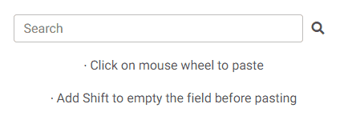

Willkommen bei Copy on Select!
WICHTIG: Bitte laden Sie Chrome neu, um die Erweiterung zu aktivieren!
CAVEATS
Die Erweiterung funktioniert nicht auf:
- Seiten, deren URL mit dem Wort "chrome" beginnt, zum Beispiel chrome://extensions/ oder chrome://settings/. Dies ist das Standardverhalten für alle Erweiterungen.
- die Seite "Neue Registerkarte" (die Seite, die sich öffnet, wenn Sie in Chrome auf das +-Zeichen klicken). Wie oben beschrieben, ist dies der Standard für alle Chrome-Erweiterungen.
- der URL-Leiste des Browsers (da sie sich außerhalb des Browsing-Fensters befindet).
KOPIEREN

- Markieren Sie einen Text und er wird automatisch kopiert.
- Um das automatische Kopieren zu umgehen, halten Sie die Strg-Taste (Befehlstaste auf dem Mac) gedrückt.
- Jedes Mal, wenn Sie eine neue Auswahl treffen, wird ein kurzer Hinweis "Kopiert!" angezeigt. Wenn Ihnen das nicht gefällt, können Sie es auf der Optionsseite deaktivieren..
EINFÜGEN
Methode 1: Klicken Sie mit der mittleren Maustaste.

- Machen Sie einen mittleren Klick (Mausrad) auf ein Eingabefeld und der kopierte Text wird automatisch eingefügt.
- Wenn Sie beim Klicken mit der mittleren Maustaste die Umschalttaste gedrückt halten, wird das Feld vor dem Einfügen von bereits vorhandenem Inhalt befreit.
- Sie können diese Funktion auf der Optionsseite deaktivieren..
- Sie können auch festlegen, dass das Feld vor dem Einfügen immer geleert wird, ohne dass Sie die Umschalttaste gedrückt halten müssen. Aktivieren Sie diese Option auf der Seite Optionen.
Methode 2: Mit Doppelklick.

- Doppelklicken Sie auf ein Eingabefeld, während Sie die Strg-Taste (Befehlstaste auf Mac) gedrückt halten, und der kopierte Text wird automatisch eingefügt.
- Halten Sie die Umschalttaste gedrückt, während Sie doppelklicken, und das Feld wird vor dem Einfügen von bereits vorhandenem Inhalt befreit.
- Sie können diese Funktion auf der Optionsseite deaktivieren..